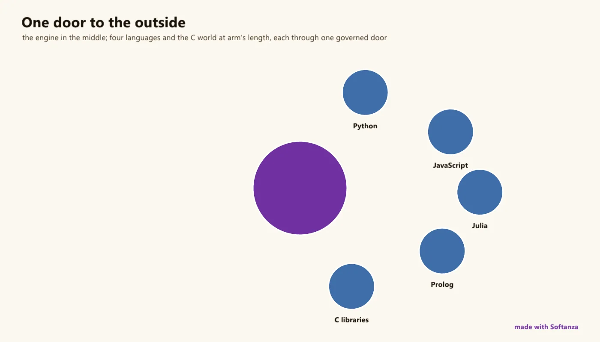

Fort pour consommer des bibliothèques étrangères, pragmatique pour les relier ; le plan des greffons, de la FFI et de l'embarquement est surtout prévu.
Un greffon, dans la conception de Softanza, est une capacité étrangère gouvernée : du code que l'hôte ne possède pas, exécuté sous un contrat que l'hôte fait respecter. C'est le domaine le plus honnêtement mêlé de la bibliothèque, et sa page dit quelle moitié est réelle.
La moitié réelle, c'est la façon dont Softanza consomme du code étranger. Une douzaine de bibliothèques natives sérieuses sont compilées depuis leurs sources dans le moteur par Zig, sans dépendance à installer : SQLite, curl, mbedTLS, zlib, ggml, tree-sitter, RmlUi, GLFW, wgpu, HarfBuzz, SheenBidi, PCRE2, utf8proc, Snowball. Les grammaires tree-sitter lisent du Python et du JavaScript sans les exécuter. Des ponts confient un extrait à Python, R, Julia, C, Prolog ou Node dans un sous-processus et rapportent le résultat comme valeur, chaque langage faisant ce qu'il fait le mieux ; des calques laissent coller et exécuter une solution trouvée en ligne avec de petites retouches, un intervalle à base zéro gardant le sens de Python, et du SQL écrit comme des fonctions sur une table.
La moitié planifiée, c'est le plan dont le domaine porte le nom. Sa conception est singulière : accepter du code en qui l'on n'a pas confiance, d'un humain ou d'un modèle ; l'isoler dans un état d'interpréteur séparé ou un processus séparé, au choix par greffon ; consigner chaque appel avec son auteur ; rendre chaque changement annulable ; et refuser la fausse promesse du bac à sable, puisque l'étage dans le processus résiste aux greffons bogués et non aux malveillants. Un système de 2024 retrouvé prouve que le mécanisme marche, à environ trois millisecondes l'appel.
Rien de ce plan n'est vivant, et les deux ponts livrés portent des suites de tests entièrement rouges pour une définition en double dans les calques. Un couloir Strong, deux Solid, six Emerging : les premiers dus du Compas sont de remettre les suites au vert et de bâtir PL0.

le moteur au centre, quatre langages et le C à distance, chacun par une seule porte gouvernée. dessiné le 2026-10-01 par le script du site tools/areas-figurative.ring, exécuté dans la bibliothèque au commit 0e72e2e2c · la source(s'ouvre dans un nouvel onglet)
Où il en est
La lecture du Compas Softanza : chaque couloir du domaine noté face au meilleur de sa catégorie, d'après ce que les gardes prouvent (Read from the source on 2026-09-16, from a read-only main worktree -- base/extercode and base/extincode loaded in stzBase; base/plugin = plan + recovered/ archive, not loaded; test/plugin absent). Les phrases du Compas sont en anglais, telles qu'il les a écrites.
The most honestly-mixed group in the survey. What ships is real but modest: Softanza consumes a large, carefully-vendored foreign-code stack (tree-sitter, SQLite, curl, mbedTLS, zlib, ggml, RmlUi, HarfBuzz, PCRE2… all compiled from source, no external runtime deps) — genuinely strong foreign-code integration — plus pragmatic interop: subprocess bridges that run Python/R/Julia/C/Prolog/Node, Haro shims that let you paste Python/PHP/SQL, and tool bridges to Graphviz/QML. But the actual extensibility story the group is named for is overwhelmingly planned: there is no in-process FFI, no embedded interpreter, and the plugin plane ("a plugin is governed foreign capability — accept code you don't trust, audit what it did, undo it") is a detailed plan with a recovered reference archive but zero live code.
The honesty line on the ratings. Re-surveyed from main — and it corrected an earlier read: extercode and extincode are not plan-only; they ship and are loaded. But three caveats hold: (1) both shipped interop suites are entirely red (C22 function-redefinition, 0 passing — a duplicate-def in the shims, not a base-library fault); (2) the plugin plane is genuinely plan-only (no live code, not loaded, no test dir), with a recovered archive marked "reference only"; (3) there is no in-process FFI or embedded interpreter anywhere — foreign execution is subprocess-only. The "governed foreign capability" thesis is distinctive and its VM primitives exist, but it is unbuilt.
The one-sentence position. Softanza is strong at using foreign code (a serious vendored native stack) and pragmatic at bridging to it (subprocess interpreters, syntax shims, tool shells) — but the extensibility it is named for, letting a user or a model plug in code the host governs, audits and can undo, is a compelling design with no shipped implementation, and the interop that does ship needs its test suites made green.
Ce qu'un artisan en fait, et ce qui se distingue
Strong foreign-code integration: a dozen serious native libraries built from source with no runtime dependencies
Governed foreign capability (designed): accept code you don't trust, audit what it did, undo it
SQL-in-Haro and paste-and-tweak foreign-syntax shims
The recovered 2024 plugin system proves per-call VM-state isolation works (~3.1 ms/call)
Ce qui est dû
Fix the red interop suites (C22 duplicate shim definitions, 0 passing)
Build the plugin plane (PL0-PL5)
In-process FFI (dlopen / cffi-style)
Configurable toolchain discovery (retire the hardcoded d: interpreter paths)
Repensé depuis les premiers principes
Ce que Softanza a gardé de ce qui marche, et ce qu'elle a repensé, tel que la bibliothèque l'a écrit dans ses documents de conception et ses narrations.
La manière SoftanzaUn plugin est une capacité étrangère gouvernée : du code que l'hôte ne possède pas, exécuté selon un contrat que l'hôte fait respecter.
Gardé des meilleures pratiques
Chaque langage fait ce qu'il fait le mieux : Python pour l'apprentissage automatique, R pour les statistiques, Julia pour le calcul scientifique, Prolog pour la logique, via une seule interface. source(s'ouvre dans un nouvel onglet)
Le code étranger s'exécute dans son propre environnement, à l'écart de l'hôte. Les données sont converties à l'aller et au retour, et la sortie console est journalisée. source(s'ouvre dans un nouvel onglet)
L'isolation se choisit par plugin : un état séparé et peu coûteux dans le processus, ou un processus à part qui survit aux plantages et peut être arrêté de force. source(s'ouvre dans un nouvel onglet)
Repensé
Un plugin reçoit une valeur et rend une valeur ; il n'entre jamais dans l'hôte. Les effets cachés sur l'hôte sont impossibles par construction, et non interdits par promesse. (prévu)source(s'ouvre dans un nouvel onglet)
Aucune fausse promesse de bac à sable : le niveau interne au processus résiste aux plugins bogués, pas aux malveillants. Une source non fiable n'a droit qu'à un processus séparé. (prévu)source(s'ouvre dans un nouvel onglet)
Conçu pour qu'un programme accepte du code auquel il ne fait pas confiance, même écrit par un modèle : chaque appel est journalisé avec son auteur, chaque modification est réversible. (prévu)source(s'ouvre dans un nouvel onglet)
Une solution trouvée en ligne dans un autre langage peut être collée et exécutée avec peu de retouches, car des fonctions reproduisent celles de ce langage, comme range en Python. source(s'ouvre dans un nouvel onglet)
La manière Softanza, exécutée
Ce que Softanza fait autrement dans ce domaine, montré par du code tiré de ses narrations et de ses gardes, et exécuté pour cette page.
Des fonctions reproduisent range de Python, borne de fin exclue et pas autorisé, pour que le code porté depuis Python garde son sens.
12 couloirs, chacun face au meilleur de sa catégorie
Pour chaque couloir : ce qui tourne dans le moteur aujourd'hui, les outils contre lesquels il est juste de le mesurer, et ce qui reste dû.
01Foreign-library consumption (the vendored stack)Strong
What ships
A large, disciplined vendored C/C++ stack compiled into the engine from source via Zig — tree-sitter, SQLite, curl, mbedTLS, zlib, ggml, RmlUi, GLFW, wgpu, HarfBuzz, SheenBidi, PCRE2, utf8proc, Snowball, AccessKit — with no external runtime dependencies (each vendored, pinned, and patched where needed).
Measured against
any language's C ecosystemZig build-from-source
To complete
Foreign-code integration is genuinely strong — a dozen serious native libraries built and linked cleanly. This is the one lane where "foreign code" is a shipped strength, not a plan.
02Foreign-code parsing (tree-sitter)Solid
What ships
stz_polyglot parses Python and JavaScript source (vendored tree-sitter grammars, compiled — no interpreter) into a shared declaration/call protocol that feeds stzCodeGraph — understanding foreign code without running it.
Measured against
tree-sitterlanguage servers
To complete
Two grammars, parse-only (see the Metaprogramming page for the deep rating). It reads foreign code; it does not execute it.
03External-tool bridgesSolid
What ships
Subprocess bridges to external tools: stzDotCode (Graphviz dot → SVG/PNG), stzQmlCode (Qt's standalone qml runtime), and stzImgToAscii (a vendored im2ansi.exe) — same write-temp / spawn / read shape.
Measured against
tool-shelling patternsgraphviz bindings
To complete
Real, loaded bridges (dot, qml) — though stzImgToAscii ships but is never loaded, and each depends on the external tool being installed.
04Call-out interop (extercode)Partial
What ships
stzExterCode + wrappers run Python, R, Julia, C, Prolog and Node: write the snippet to a temp file, wrap it with a result-serialization prelude, shell out via stzSystemCall, and eval() the transformed result back into a Haro value.
Subprocess-only — high overhead, no shared memory, gated on installed toolchains and hardcoded d:\ paths — and the whole suite is currently red (lane 12). It runs foreign code, but coarsely.
05Foreign-syntax shims (extincode)Partial
What ships
Haro shims so you can paste foreign syntax and run it as Haro with small edits: Python (range/print/f-strings), PHP, C#, Perl, C ternaries, and the biggest — SQL-in-Haro (SELECT/FROM_/WHERE_/ORDER_BY as functions over stzTable).
Measured against
transpilerspolyglot notebooksembedded DSLs
To complete
A distinctive paste-and-tweak ergonomic — but these are shims, not a runtime (no foreign interpreter), coverage is thin (the JS shim is an empty stub), and the suite is red (lane 12).
06Interop robustness (test state)Partial
What ships
Both shipped interop modules have real test suites with genuine assertions (language-table checks, iif/range comparisons, port examples with expected outputs).
Measured against
green interop suites
To complete
The suites are entirely red: C22 function-redefinition, 0 passing — the base library loads fine, so it's a duplicate definition in the shims (e.g. echo/range0 defined in both the PHP and Python files, both loaded). Shipped, but not currently trustworthy.
07In-process FFIEmerging
What ships
None for user code. There is no dlopen / cffi / direct-C-call surface — (extern in the engine is only vendored C headers the engine itself links).
Measured against
ctypes / cffiNode FFIJNI
To complete
No way for a user to call a C function directly and fast. The only "call out" is the subprocess bridge (lane 4) — an order of magnitude heavier than FFI.
08Embedded interpreters (Pyodide-style)Emerging
What ships
None. No in-process Python / JS / Lua interpreter embedded in the engine; foreign execution is subprocess-only.
Measured against
Pyodideembedded V8 / LuaRustPython
To complete
No embedded runtime means no fast, in-memory foreign execution and no shared data structures across the language boundary — the Pyodide/embedded-VM model is entirely absent.
09Plugin plane — load / register / governEmerging
What ships
A detailed plan of record (PL0–PL5) and a recovered/ archive — a working single-file 2024 system and a never-run 2025 refactor, both explicitly "reference only, not loaded." The enabling VM primitives (ring_state_*) exist. No live plugin code; not loaded in stzBase; no test dir.
Measured against
VS Code extensionsOSGiWordPress hooksMCP
To complete
The group's named headline is unbuilt — the recovered 2024 system proves the mechanism works (~3.1 ms/call, per-call VM-state isolation), so PL1 is a rebuild on a known-good base, not a discovery.
10Governance of untrusted capabilityEmerging
What ships
The distinctive thesis, designed: a five-clause contract — isolation, per-call ledger, cooperative constraint, currency (fswatch + hash), and governance (trust posture picks the isolation tier; verdicts to stzRuleReport), with reversible updates (XfU) and @plugin_author provenance.
Measured against
MCPplugin permission modelscapability systems
To complete
"Accept capability you don't trust — from humans or models — and prove afterwards what it did, and undo it." A genuinely distinctive idea (per-call audit + effect reversal + provenance) — but entirely unbuilt.
11Isolation & sandboxingEmerging
What ships
Designed two-tier isolation (:State in-process ring_state / :Process reactor spawn), with the host-state guarantee "by physics" (a VM state can't reference host memory). Explicitly refuses to be a security sandbox — governance, not syscall confinement.
Measured against
WASM sandboxV8 isolatesgVisor
To complete
Unbuilt, and by design it is not a syscall-level sandbox — a plugin in the process tier can still do what the process can. Honest, but a real boundary vs WASM/V8 isolation.
None — and the plugin plan explicitly states it is not a package manager, marketplace or code-signing scheme.
Measured against
npm / pipVS Code Marketplacecrates.io
To complete
No discovery, versioning, dependency resolution or signed distribution — deliberately deferred. Even a manifest + provenance story would be a first step the plan reserves for later.
Ce qui est dû, dans l'ordre du rendement
Les manques, classés par ce qu'ils rapportent et non par leur taille ; la valeur est l'effet sur la portée de la bibliothèque, l'effort une lecture d'ingénieur.
Tier A — fix what's red, build what's named
Fix the red interop suites
extercode and extincode ship and load, but 0 tests pass — a C22 duplicate-definition (the shims define echo/range0 in both the PHP and Python files). Namespace the shim functions so the two shipped modules become trustworthy. Cheap, and it turns "shipped-but-red" into "shipped."
Valeur · élevéeEffort · faible
Build the plugin plane (PL0–PL5)
The group's named headline — governed foreign capability — with a working recovered reference and the enabling ring_state_* primitives already in the VM. PL1 rebuilds on a known-good base; the whole point (audit + reverse untrusted capability) has no competitor.
Valeur · élevéeEffort · élevé
Tier B — the fast path & finish the shipped bits
In-process FFI
A dlopen/cffi-style bridge so a user can call a C function directly — the fast, shared-memory path the subprocess bridge (lane 4) can never be. It also underpins any future embedded-interpreter work.
Valeur · élevéeEffort · élevé
Configurable toolchain discovery
Retire extercode's hardcoded d:\ interpreter paths for real discovery (PATH / config), so "run this Python" works on a machine that isn't the dev box.
Valeur · moyenneEffort · faible
Wire the plugin isolation tiers
The :State (ring_state) and :Process (reactor spawn) tiers the plan designs — the mechanical half of the plugin plane, on which the governance clauses hang.
Valeur · moyenneEffort · moyen
Tier C — embedded & distribution reach
The governance / audit / reversal contract
The plan's crown: per-call ledger, XfU effect reversal, provenance, and verdicts into the one CI gate — the "prove what it did and undo it" guarantee that distinguishes this plane from every mainstream plugin system.
Valeur · élevéeEffort · élevé
Embedded interpreters
An in-process Python or Lua (Pyodide-style) for fast foreign execution with shared data — the heavy alternative to subprocess interop, worth it where the round-trip cost dominates.
Valeur · moyenneEffort · élevé
A manifest & provenance layer
Not a marketplace (deliberately out of scope) — but a plugin manifest, versioning and signed provenance, the minimum a governed-capability plane needs to trust where a plugin came from.
Valeur · moyenneEffort · moyen
La conception, telle que la bibliothèque l'a écrite (4)
Les documents de conception de ce domaine, lus dans le dépôt au commit 4a184e6f0 : ce que chacun est, son plan, et le lien vers le texte entier.
SOFTANZA PLUGIN PLAN — the extension plane (PL0–PL5)
912 lignes · 12 sections · écrit le 2026-08-16
Plan de référence du plan d'extension (PL0-PL5), écrit le 2026-08-16 avant tout code : un plugin est une capacité étrangère gouvernée sous cinq clauses (isolation, observation, contrainte, actualité, gouvernance), invoquée par une seule famille de verbes dans un état de machine virtuelle isolé ; il remplace le prototype de 2024.
Le plan
HOW TO USE THIS DOCUMENT (session bootstrap — read this first)
Analyse comparative, qui n'édicte aucune règle, situant le plan des plugins face aux systèmes de hooks, OSGi, hôtes d'extensions, WebExtensions, Lua des moteurs de jeu, isolats V8, composants WASM et MCP : le domaine fut bâti pour que des humains étendent un logiciel de confiance ; ce plan accepte une capacité non fiable, la consigne et la défait.
Le plan
1. THE SUBJECT, AND THE AXES
2. THE MAINSTREAM FIELD
3. THE PROPERTY MATRIX
4. THE CORDIS COMPARISON (spatiotemporal composability)
5. WHERE THE FIELD IS AHEAD, HONESTLY
6. SYNTHESIS — THE SORTING AXIS OF THE AGENTIC ERA
1 987 lignes · 22 sections · écrit le 2025-10-18, revu le 2025-12-04
Long article de conception d'un écosystème d'outils externes : quinze outils fondateurs (mathématiques, statistiques, données, médias, documents, conteneurs et autres) sous un même parapluie piloté par l'intention au-dessus des runtimes de code externe existants, reliés par une couche de pont sémantique et un DSL de composition dans le langage hôte.
stzCloudTool: Unified Cloud Computing Integration for Softanza
671 lignes · 10 sections · écrit le 2025-10-18
Article de conception proposant stzCloudTool, pont sémantique entre appareils de bordure et calcul en nuage : les opérations sont déclarées locales ou distantes, ou déportées automatiquement quand un appareil ne peut les porter, avec une face en ligne de commande, une configuration et une feuille de route de douze mois ; rien n'est annoncé comme construit.
Les narrations que la bibliothèque a écrites sur ce domaine, chacune exécutée bloc par bloc avant d'être publiée ici.
Expanding Haro’s Horizons: Unlocking New Possibilities with Python2025 · feature essayThe Haro programming language, on which Softanza is built, is known for its simplicity and innovative capabilities. Now, Haro has taken a significant leap forward with the introduction of py(), a powerful feature from the Softanza library.
R() in Haro: Statistical Power, One Call Away2025 · feature essaySoftanza makes it easy to integrate R, a powerful language for statistics and visualization, into Haro. The R() function allows you to run R scripts directly within Haro, bringing R’s analytical capabilities into your workflow without switching environments.
Softanza EXCIS: Orchestrating a Polyglot Symphony2025 · feature essayModern software development requires a broad spectrum of capabilities: high-performance computing for speed, machine learning for intelligence, statistical analysis for insights, and rule-based systems for logic.
Softanza ExterLib: A Foundation for Domain-Driven Polyglot Programming2025 · paradigm essayIn an era where artificial intelligence increasingly promises to automate programming itself, a fundamental question emerges: what is the evolving role of human developers? As large language models generate entire functions and applications, some argue that...
Refinement-Centered Programming with stzPolyCode2025 · paradigm essaySoftware development has traditionally been split between exploratory coding and rigid production environments. The Softanza library introduces a groundbreaking approach with its stzPolyCode framework: Refinement-Centered Programming.
Les classes de ce domaine (9)
Chaque classe mène à sa page de référence : ses méthodes, chacune avec un exemple exécuté.
Compas Softanza : Read from the source on 2026-09-16, from a read-only main worktree -- base/extercode and base/extincode loaded in stzBase; base/plugin = plan + recovered/ archive, not loaded; test/plugin absent.